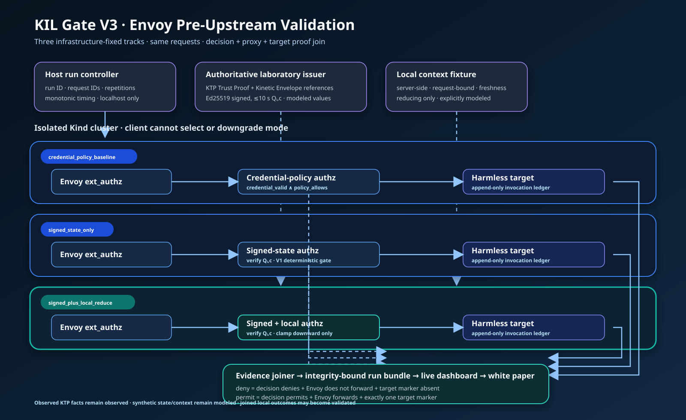

Gate V3 implementation progress
V3A status
V3A implements the signed-state and authorization core behind the approved three-track architecture. The implementation now includes:
- the closed
kil.q-state.v0claims schema; - Ed25519 compact-JWS issuance and fail-closed verification;
- a maximum ten-second lifetime plus revocation, time, subject, audience, authority-class, and action-class binding;
- infrastructure-fixed credential-policy, signed-only, and signed-plus-local- reduction tracks;
- resistance to an untrusted
x-kil-modedowngrade header; - a harmless target marker and a joined forward-or-withhold proof; and
- an atomic, content-addressed JSONL/HTML evidence bundle.
The demonstration uses the same request facts in all three tracks. With the
fixed V3A fixture, the expected result is permit / permit / deny, with target
marker counts 1 / 1 / 0 and valid joins for all three outcomes.
The first pre-review process run was 52c90309d00439e7 at implementation
commit ad3db6aa7686781761bd8622a435c279f534df05 with 121 passing tests. The
intermediate review run b0cdc26b471c9539 at implementation commit
700b307a573e3668024d51e3b156d7044b03fca3 passed 125 tests but preceded the
final zero-exponent allocation fix. Both are retained only as development
history. The canonical review-complete run is ca26ff63c09cd78b at
implementation commit 4e02ed3727096174456de0b6edcb33403d7870df with 126
passing tests. Its eight published artifacts pass SHA256SUMS verification.
The review-complete bundle records the full Ed25519 public-key thumbprint,
public JWK, explicit deterministic Level 1 laboratory-fixture provenance, and
the two audience-bound compact JWS states. No private or production key is
claimed. The bundle is generated under
artifacts/generated/v3a-process-contract/ca26ff63c09cd78b/ and remains
reproducible from the recorded implementation commit.
Evidence boundary
V3A is a modeled process-contract demonstration. It proves the local
software contracts for signature verification, fixed-mode authorization,
forwarding, target invocation, and evidence joining. It does not run Envoy or
Kubernetes and therefore does not establish a validated cluster result.
Synthetic charge, threshold, and local-divergence values remain modeled.
V3B-1 current status
The corrected in-network request-driver mechanism is implemented and statically
approved at commits 75161f0 and 48bd81a. Independent specification and
quality review approved the complete lifecycle, recovery, evidence, and exact
teardown contracts. The Task 8 implementation checkpoint passed 222 local-Envoy
tests, 38 teardown-continuation tests, focused correction proofs, and the
complete 466-test non-runtime repository suite. The fresh Task 9 complete static
gate passes 474 tests, including eight documentation tests, together with Python
compilation and diff hygiene. No Docker, Colima, network, or live laboratory
runtime was invoked by that verification.
Implemented topology and traffic boundary
V3B-1 fixes three separate tracks:
credential_policy_baseline;signed_state_only; andsigned_plus_local_reduce.
Each track has two internal networks. Its frontend is configured exactly for
{driver, Envoy} and its backend is configured exactly for
{Envoy, authz, target}. Physical membership is state-derived and includes
only running roles: with Envoy running, a created, exited, or dead driver
yields {Envoy}, while a running driver yields {driver, Envoy}. A stopped
Envoy is absent from both physical networks, and a stopped backend service is
absent from the backend inventory. Envoy is the only configured dual-homed
component. There is no host TCP publication. The complete
lifecycle owns twelve track containers—one
driver, Envoy, authorization service, and harmless target per track—plus three
transient validators, across six networks.
Docker attach/stdin is only the host control channel used to supply one
canonical instruction to a one-shot driver. Consequential traffic follows
driver -> Envoy -> authorization -> target or withhold. The driver does not
make a KIL decision and is a laboratory transport witness, not KIL enforcement.
The implemented evidence scope is local_envoy_boundary.
Moving the request origin from the host-published client to an in-network request driver changes transport and lifecycle mechanics only. It does not change the signed composite KTP state or KIL authorization semantics consumed by the authorization services.
Request and evidence contracts
Request-free readiness starts all three attached drivers before reading any readiness record, sends no instruction and no HTTP request, and then performs three bounded cancellations. A central run uses a fresh three-driver set, persists request intent before sending exactly one canonical instruction per track, and performs no retry after intent. Any intent without a trusted terminal result is ambiguous and nonpromotable; cleanup still continues against exact recorded identities.
Evidence bundle v2 publishes the exact canonical driver result for each track
under raw/drivers/. Those three byte records are bound to the corresponding
request and to nine authoritative Envoy, authorization, and target sources.
The verifier reconstructs, hashes, and joins all twelve inputs before any
complete result is eligible for publication. Teardown finalizes drivers first,
freezes the unchanged nine service sources, removes drivers, Envoys,
authorization services, targets, and validators, then proves all fifteen
containers and all six empty networks absent through full-ID inventories.
That v2 format now remains a historical verification generation. New output
uses kil.v3b1-manifest.v3: the lifecycle journal durably records exact
before/after foreign Colima profiles and requires exact equality for complete
evidence, while the public manifest retains every resource field behind
run-scoped HMAC pseudonyms. A foreign-state mismatch completes owned teardown, never
mutates a foreign profile, and can publish only a nonpromotable failure bundle.
The offline verifier dispatches v1, v2, and v3 as separate closed schemas.
The v3 prerequisite was independently reviewed, merged, and synchronized at
5ebf21a88794a9f83a0e6c8ee53e76f6d8e5142d. A fresh request-free v3 lifecycle
then published run
v3b1-4ac0b6eef70b0483f7883c8a26753d15a007f612953b25e23b8ecb6afd021a8f
with kil.v3b1-public-manifest.v3. It records three readiness completions,
three clean cancellations, zero driver instructions, zero request intents,
zero HTTP requests, nine exact empty service sources, all 15 containers and
six networks absent, and exact equality of its pseudonymous foreign-resource
arrays. The bundle is intentionally nonpromotable and does not establish an
enforcement result. The central run remains prohibited until this public-safe
checkpoint passes review, merge, and synchronization.
Live status and historical boundary
The corrected request-driver topology now has accepted Task 10 request-free lifecycle evidence at the local Envoy boundary. Earlier V3B-1 host-published cycles—including zero-request lifecycle work—remain development history for the superseded transport mechanism. They do not satisfy the current six-network topology, request-free attached-driver readiness, three-driver-result, or fifteen-container teardown contracts and therefore cannot be promoted as acceptance evidence for this implementation.
The first driver-era Task 10 attempt rejected Docker's closed null-network
validator representation; the merged correction recovered that lifecycle
without a request. The second attempt then rejected Docker's expanded
image-bound disabled-healthcheck representation; PR #13 merged the closed
correction. Bounded recovery from that attempt rejected a distinct Docker
endpoint-lifecycle representation before any removal: all three never-started
drivers were exactly configured for their frontends in created state, but the
physical frontend inventories contained only Envoy until driver start. The
state-aware correction passed public CI and merged as
7677052f6fd2b4287f419dc01ec9a1a859191777. Recovery under that commit
accepted the created-driver topology, classified the partial-up evidence as
nonpromotable, and cleanly stopped the baseline Envoy, then failed closed before
stop completion because Docker changed the unbound exposed-port projection from
{"10000/tcp":null} to {} together with running -> exited. Read-only audit
confirmed that the other 34 normalized runtime fields were unchanged and that
the six running authorization/target services have the corresponding fixed
{"8080/tcp":null} shape. A role-bound correction accepts only those exact
one-way controlled-stop representations while preserving every other identity,
hardening, topology, and no-publication check; its 228-test controller suite
and complete 480-test repository gate passed, independent reviews found no
Critical or Important issue, and PR #15 merged as
3dce7cbd0153716b9e52cae791b97f50131989f7. The next bounded recovery accepted
that port normalization without issuing another stop, then failed before any
mutation because the stopped Envoy was absent from Docker network Containers.
Read-only inspection confirmed the baseline backend contained only its running
authz and target endpoints and its frontend was empty, while both untouched
tracks retained their exact running endpoints. The current correction derives
physical membership only from freshly attested running state and durably
completes an already-effective pending stop without repeating it. No readiness
instruction, request intent, HTTP action, or central run occurred in any
rejected driver-era lifecycle.
PR #16 merged that correction as
a46e8dc98a1af64ceadb5700e91c2f87840564fe after both required public CI
jobs passed. Bounded recovery then completed the rejected lifecycle without a
second stop, removed all 15 recorded containers and all six networks, verified
the dedicated profile absent, published an integrity-checked nonpromotable
failure bundle, and preserved the foreign default context name. A post-run
readback observed its stopped resource tuple, but that exact tuple was not
durably bound at both ends of the lifecycle.
The fresh driver-era Task 10 request-free gate then passed from source
a46e8dc98a1af64ceadb5700e91c2f87840564fe as run
v3b1-d2b26f6c8136dcd26a6e6727b9bb1381076a1e03b71a5a44df9b2b2ef9db6cf9.
All three tracks produced exact readiness records and three clean
cancellations. The journal contains zero driver instructions, zero request
intents, and zero HTTP requests. All nine service-source legs terminated and
persisted exact zero-byte evidence. Teardown removed all 15 exact containers
and all six exact networks, recorded zero survivors, verified the dedicated
profile absent, and cleared active state/journal/poison. The public manifest
binds the foreign context name as default before and after; a post-run
readback observed Stopped/containerd/aarch64/4 CPU/4 GiB/20 GiB, but the
exact resource tuple was not durably bound before and after. Every published
checksum passed. The bound public-safe facts are recorded in
V3B1-TASK10-REQUEST-FREE-GATE.md.
The historical Task 10 record and V3 snapshot implementation merged and
synchronized, and the fresh V3 request-free gate above passed locally. The
first central run was then invoked exactly once from synchronized source. It
observed HTTP 200 / 200 / 403, target markers 1 / 1 / 0, and one completed
request per track with no retry, but evidence collection failed closed. Frozen
sources identified two fixed Envoy transport headers in authorization records,
typed-JSON number/null access-log values instead of the closed string/sentinel
shape, and one immediate ledger-availability failure. down removed all 15
containers and six networks, verified exact foreign-resource equality, and
published only integrity-checked nonpromotable failure evidence. The failed
bundle and private sources remain ignored and immutable.
The correction classifies only the two exact transport headers, emits one
canonical JSON text line at the Envoy producer, and bounds read-only ledger
probe/copy stabilization to one shared five-second deadline with byte-count and
SHA-256 equality. Its focused 52-test gate, complete 257-test controller
module, and full 566-test repository gate pass locally. Separate specification
and quality/security reviews found no unresolved Critical or Important issue;
the latter tightened copied-ledger reads to a no-follow descriptor with stable
inode, size, and digest attestation. No driver instruction, request intent,
HTTP action, or second central run occurred while implementing it. A newly
authorized run remains prohibited until this correction passes public CI,
merge, and exact synchronization; only then may one new central local-Envoy
proof be attempted, with no retry after request intent.
V3B-1 remains limited to the local Envoy boundary. V3B-2 is the future isolated Kind/Calico topology; its NetworkPolicy behavior, cluster-level transport, failure matrix, and measurements are unexecuted. V3C repetition and performance promotion are also future work. No historical-prevention or performance claim is made.
Historical pre-driver topology records
The records in this section preserve the earlier nine-service/three-network host-published lifecycle exactly as development history. That topology is retired. Its runs cannot satisfy the current six-network request-driver readiness, three-driver-result, or fifteen-container teardown contracts, and no fact below is current driver-era live acceptance.
Three exploratory local cycles were rejected and remain private. The first
committed zero-request smoke completed from merged public source
47c0614d49ec1a7484cdefd04cc5d080adc73ca2 with run ID
v3b1-1db8b5914ce26e2e6c60e74124bcc1b2c9ed66b7dd68c2d3cf4ea1bc0d18c9b3.
Its eight request, normalized-decision, Envoy, target, join, and raw-decision
JSONL files were exactly zero bytes. SHA256SUMS verified, the manifest was
run_complete=false, promotion_status=not_promoted, and teardown was
complete and verified before publication. Nine service containers, three
transient validator containers, all three networks, and only the dedicated
profile were removed; lifecycle state, readiness poison, and the active journal
were absent; the foreign default profile was restored to Running/containerd/
4 CPU/4 GiB/20 GiB. The smoke manifest SHA-256 is
24176666cc860cfe0b66a67f8a63d0f63d66b4f91329e06464b1475eb84e55c4.
The ignored nonpromotable bundle remains private for offline backup.
The run safely exercised teardown and foreign-runtime restoration, but it did
not pass the zero-request evidence-freeze gate. The durable lifecycle journal
records all three requests as not_attempted; all nine sources were observed
as zero bytes; and the three Envoy legs were copied and byte-bound. Docker copy
failed for all six authorization and target ledgers, however, so the empty
failure bundle does not independently prove those service sources were absent.
No enforcement run in the retired topology was accepted, promoted, or labeled
validated.
The bounded exact-byte correction was then implemented and statically verified. If normal Docker copy failed, the controller executed a fixed, no-shell exporter in the attested service container; bounded and opened the real ledger without following symlinks; required a stable regular inode and size; emitted its exact bytes, count, and digest in a closed canonical envelope; and required the host to recheck that envelope against the independent pre-copy observation before freezing it. It never synthesized an empty file from metadata. Empty, nonempty, malformed, mismatched, oversized, and symlink cases were covered, including direct subprocess execution of the real exporter. Independent review found no Important or Critical issue. Static verification passed 180 controller tests and 396 repository tests, plus Python compilation and diff hygiene. The remaining risk was the real Docker path, which motivated the repeated zero-request gate.
The first two post-merge launch attempts remained pre-profile and
non-enforcement events. The first could not expose the repo-pinned Docker CLI to
Colima's dependency check; the second used the corrected explicit PATH but
Colima v0.10.3 rejected --nested-virtualization=false during actual launch,
despite advertising the boolean option in help mode. Neither attempt created
kil-v3-lab, a Docker object, or a request; each journal records all request
states as not_attempted and was archived through down. The foreign default
profile was restored to its exact Running/containerd/arm64/4 CPU/4 GiB/20 GiB
state. The minimal compatibility correction removed only that redundant false
CLI flag. The saved-config attestation still required
nestedVirtualization: false before any service container could deploy.
The corrected zero-request lifecycle then passed from synchronized public main
6706859d265204e0a569ebb6817d187dc1728f9d as run
v3b1-0374c771b23adcab64060cd8c854d12b72417ff8e4713d24e6f6a550e20bdbea.
No run command or request intent occurred. All nine Envoy, authorization, and
target source legs terminated copied; every source and copied byte count was
zero and every digest was the empty SHA-256. All 11 public SHA256SUMS entries
verified. The manifest remained intentionally run_complete=false,
promotion_status=not_promoted, and
intermediate_provisional_failure_local_boundary; it did not claim an
enforcement result. Teardown removed nine services, three transient validators,
three networks, and only kil-v3-lab before publication. No active lifecycle
state remained, and the foreign profile was host-verified after restoration as
Running/containerd/arm64/4 CPU/4 GiB/20 GiB.
Within the retired pre-driver topology, this result accepted the zero-request lifecycle and evidence-freeze gate. The offline presenter correctly rejected the smoke because it was not an accepted local-boundary enforcement run. Those facts remain valid historical records, but they do not authorize or substitute for the now-passed driver-era Task 10 lifecycle gate or the still-pending central enforcement gate.
Architecture

The source diagram is
docs/architecture/v3-envoy-live-validation.svg,
and the complete approved specification is
docs/superpowers/specs/2026-08-29-v3-envoy-live-validation-design.md.
{kind=link}
Next gate
The first central attempt failed closed after the intended enforcement tuple
without a retry. Review, merge through public CI, and exactly synchronize the
producer-format and bounded-read correction while preserving that failed
bundle and its private journal. Only afterward start a new synchronized
preflight / up lifecycle and execute one newly authorized central
run / down proof with no retry after request intent.
Its prospective acceptance criteria remain permit / permit / deny,
HTTP 200 / 200 / 403, target markers 1 / 1 / 0, exact three-driver and
nine-service-source joins, verified checksums, exact teardown, restored foreign
runtime, and offline presenter acceptance. V3B-2 and V3C remain later gates;
all V3A output remains explicitly modeled.
KTP citation: canonical CITATION.cff.